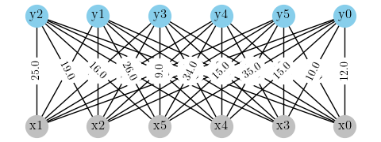
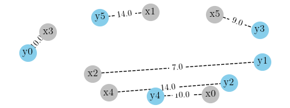

The optimal transport problem is a fascinating area in applied mathematics and optimization. One way to tackle this problem is through minimum cost bipartite matching. In this blog, we will show how this problem can be represented by a bipartite graph where the edges connecting the nodes are weighted by the transportation cost and then we will show step by step how to use minimum cost bipartite matching to solve the problem.
Monge formulation
Let \( (\Omega_{X}, F_{X}, \mu) \) and \( (\Omega_{Y}, F_{Y}, \nu) \) be two probability spaces with \(\mu\) and \(\nu\) discrete measures. The Monge formulation of the optimal transport problem is
$$\min \left\{ \sum_{X} c_{T}(x) \mu(x) : T_{\#}(\mu) = \nu \right\}$$where \( T_{\#} \) is the pushforward measure of \(\mu\) by \(T\).
If \( X: \Omega_{X} \rightarrow \mathbb{R} \) and \( Y: \Omega_{Y} \rightarrow \mathbb{R} \) are two discrete random variables with \( \Omega_{X} = \Omega_{Y} = [1, \ldots, N] \), this formulation is equivalent to
$$ \begin{array}{c}\text{min}\\ \sigma \in \Pi_{N}\end{array} \left\{ \sum_{i=1}^{N} C_{i},\sigma(i) \right\}$$where \( \Pi_{N} \) is the set of all the permutation matrices of \( {1, \ldots, N} \text{x} {1, \ldots, N}\), \(\sigma \in \Pi_{N} \) a permutation matrix and \(\sigma(i)\) the ith row of \(\sigma\).
Importing libraries
import numpy as np
import networkx as nx
import math
import matplotlib.pyplot as plt
import matplotlib as mpl
plt.style.use("science")
Bakeries and cafeterias
Suppose we have N bakeries and N cafeterias. A bakery can deliver to only one cafeteria. The cost of the ith bakery supplying the jth cafeteria is given by the following matrix
N = 6
C = np.array([[12., 10., 31., 27., 10., 30.],
[22., 7., 25., 15., 11., 14.],
[19., 7., 19., 10., 15., 15.],
[10., 6., 21., 19., 14., 24.],
[15., 23., 14., 24., 31., 34.],
[35., 26., 16., 9., 34., 15.]])
C.shape
(6, 6)
We want to minimize the total cost of supplying all the N cafeterias. This is a problem of finding an optimal transport map i.e. an application T that maps a bakery to a cafeteria and minimizes the total cost.
The number of possibilities is
$$ \begin{align} \left( \begin{array}{cc}6\1\end{array} \right) * \left( \begin{array}{cc}5\1\end{array} \right) * … * \left( \begin{array}{cc}2\1\end{array} \right) * 1 = 6! \end{align} $$
math.factorial(6)
720
One of these 720 possibilities is for the ith bakery to supply the ith cafeteria. The permutation matrix is \( \sigma = I_{N} \) the identity matrix. The cost is the sum of the diagonal
np.diag(C).sum()
103.0
Instead of testing all the N! possible solutions which is impractical, we formulate the problem as follow
$$ \begin{array}{c}\text{min}\ \sigma \in \Pi_{N}\end{array} { \sum_{i=1}^{N} C_{i},\sigma(i) } $$
where \(C\) is the cost and \(\sigma\) is a permutation matrix of \( {1, \ldots, N} \text{x} {1, \ldots, N} \)
Optimal transport as minimum cost bipartite matching
Let’s construct a graph where both the bakeries and the cafeterias are the nodes
g = nx.Graph()
nodes_x = ['x' + str(_x) for _x in list(range(N))]
nodes_y = ['y' + str(_y) for _y in list(range(N))]
print("Nodes x :", *nodes_x)
print("Nodes y :", *nodes_y)
Nodes x : x0 x1 x2 x3 x4 x5
Nodes y : y0 y1 y2 y3 y4 y5
Adding the nodes to the graph
for node in nodes_x + nodes_y:
g.add_node(node)
Adding the edges
for i in range(N):
for j in range(N):
g.add_edge(nodes_x[i], nodes_y[j], weight=C[i, j])
Drawing the bipartite graph
def draw_graph(g, filename = "", layout = "bipartite"):
fig = plt.figure(figsize=(5, 2))
if layout == "bipartite" :
pos = nx.bipartite_layout(g, nodes_x, align = 'horizontal')
else:
pos = nx.spring_layout(g, nodes_x)
nx.draw_networkx_nodes(g, pos, nodelist=nodes_x, node_color = 'silver', node_size = 400)
nx.draw_networkx_nodes(g, pos, nodelist=nodes_y, node_color = 'skyblue', node_size = 400)
nx.draw_networkx_labels(g, pos, font_color = 'black')
nx.draw_networkx_edges(g, pos)
edge_labels = nx.get_edge_attributes(g, 'weight')
nx.draw_networkx_edge_labels(g, pos, edge_labels)
plt.axis('off')
plt.tight_layout()
if filename != "":
plt.savefig(filename)
plt.show()
draw_graph(g)

This is a bipartite graph, its vertices are divided into two disjoint sets \(X = { x_{0}, x_{1}, …, x_{5} }\) and \(Y = { y_{0}, y_{1}, …, y_{5}}\)
The optimal transport problem formulated above is the problem finding a matching in a bipartite graph for which the sum of the weight of the edges is minimum.
Solving the problem
Many polynomial time (in the number of vertices \(N\) ) algorithms for solving this problem exists. The Hopcroft-karp algotihm is implemented in scipy and can be called from networkx to find the minimum bipartite matching of a graph.
res = nx.bipartite.minimum_weight_full_matching(g)
res
{'x1': 'y5',
'x2': 'y1',
'x5': 'y3',
'x4': 'y2',
'x3': 'y0',
'x0': 'y4',
'y5': 'x1',
'y1': 'x2',
'y3': 'x5',
'y2': 'x4',
'y0': 'x3',
'y4': 'x0'}
The minimum cost is the sum of the weights
min_cost = 0.
for src, dest in res.items():
min_cost += g.get_edge_data(src, dest)['weight']
min_cost /= 2
The minimum cost is
min_cost
64.0
Visual checking
fig, ax = plt.subplots(figsize = (4, 4))
ax.matshow(C, cmap = mpl.colors.ListedColormap(["white"]))
ax.set_title("Optimal transport plan")
for i in range(N):
for j in range(N):
nodex = nodes_x[i]
nodey = nodes_y[j]
if (res[nodex] == nodey):
color = 'red'
else:
color = 'black'
ax.text(j, i, int(C[i, j]), horizontalalignment = 'center',
verticalalignment = 'center', weight = 'bold', color = color)

If we sum the values in white we have indeed the minimum cost
10 + 7 + 14 + 9 + 10 + 14
64
The solution is for the bakery 3 to supply the cafeteria 0, the bakery 2 to supply the cafeteria 1, the bakery 4 to supply the cafeteria 2 and so on…
The optimal transport matrix is
z = np.zeros((N, N))
for i in range(N):
for j in range(N):
x = nodes_x[i]
y = nodes_y[j]
z[i,j] = (res[x] == y)
z
array([[0., 0., 0., 0., 1., 0.],
[0., 0., 0., 0., 0., 1.],
[0., 1., 0., 0., 0., 0.],
[1., 0., 0., 0., 0., 0.],
[0., 0., 1., 0., 0., 0.],
[0., 0., 0., 1., 0., 0.]])
z is the permutation matrix that minimizes the transportation cost
$$z = \begin{array}{c}\text{argmin}\ \sigma \in \Pi_{N}\end{array} \sum_{i=1}^{N} C_{i},\sigma(i)$$
The corresponding bipartite graph is
sg = nx.Graph()
nodes_x = ['x' + str(_x) for _x in list(range(N))]
nodes_y = ['y' + str(_y) for _y in list(range(N))]
for node in nodes_x + nodes_y:
sg.add_node(node)
for i in range(N):
for j in range(N):
nodex = nodes_x[i]
nodey = nodes_y[j]
if (res[nodex] == nodey):
sg.add_edge(nodex, nodey, weight=C[i, j])
#draw_graph(sg, layout = "planar")
fig = plt.figure(figsize=(5, 2))
# Layout
pos = nx.spring_layout(sg, k = 4, seed = 10)
# Nodes
nx.draw_networkx_nodes(sg, pos, nodelist=nodes_x, node_color = 'silver', node_size = 400)
nx.draw_networkx_nodes(sg, pos, nodelist=nodes_y, node_color = 'skyblue', node_size = 400)
# Nodes labels
nx.draw_networkx_labels(sg, pos, font_color = 'black')
# Edges
nx.draw_networkx_edges(sg, pos, style = "dashed")
# Edge weights labels
edge_labels = nx.get_edge_attributes(sg, 'weight')
nx.draw_networkx_edge_labels(sg, pos, edge_labels, font_color = 'black')
plt.axis('off')
plt.tight_layout()
plt.show()

References
- Gabriel Peyré, Computational optimal transport